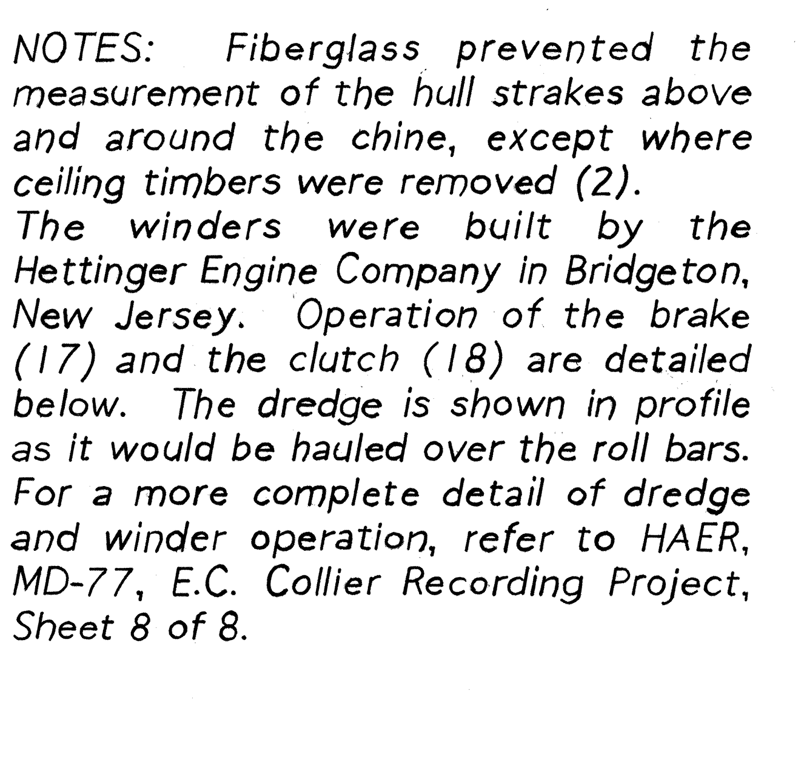

Original scan pixels: [7039, 602, 9201, 2709]; source SHA-256: 8e1e32bd0608a3214c250e2ebe4090f44ca68c3d9cf1ebfc27482f0b40d4e683.
Native lossless view · Raw OCR · Word coordinates/confidence · Manifest

Fiberglass obscured hull strakes except where ceiling was removed. Winder is a Hettinger Engine Company unit; separate references describe dredge operation.
NOTES: Fiberglass prevented the © measurement of the hull strakes above and around the chine, except where ceiling timbers were removed (2). The winders were built by the Hettinger Engine Company in Bridgeton, New Jersey. Operation of the brake (17) and the clutch (18) are detailed below. The dredge is shown in profile as it would be hauled over the roll bars. For a more complete detail of dredge and winder operation, refer to HAER, MD-77, E.C. Collier Recording Project, Sheet 8 of 8.